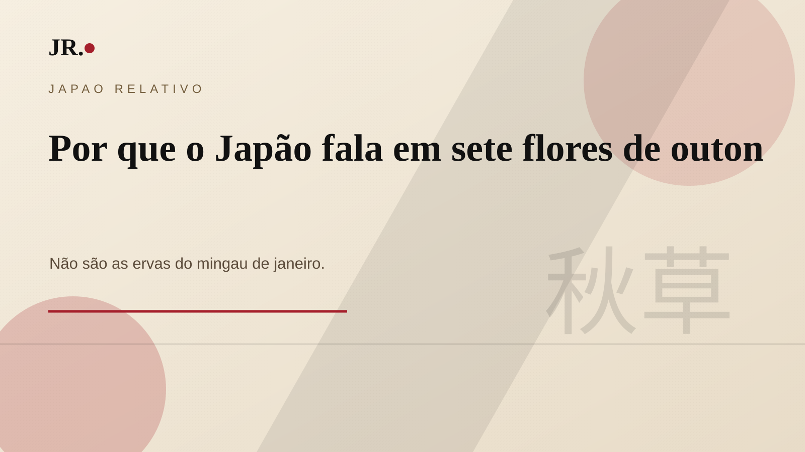

As 秋の七草, aki no nanakusa, são as sete flores associadas ao outono japonês. Elas aparecem mais como tradição contemplativa e poética do que como receita ou costume alimentar.

Quais são as sete?
O conjunto tradicional inclui hagi, obana ou susuki, kuzu, nadeshiko, ominaeshi, fujibakama e kikyo. Em japonês, a expressão é 秋の七草.
Não confunda com janeiro
As sete flores do outono não são as sete ervas da primavera usadas no nanakusa-gayu, o mingau consumido em janeiro. Aqui, a força está na observação da paisagem, na poesia e na sensibilidade sazonal.
Origem poética
A tradição costuma ser relacionada a poemas de Yamanoue no Okura preservados no Manyoshu. Em vez de uma lista botânica moderna, ela funciona como forma cultural de nomear o outono.
Como olhar hoje
Mais do que decorar nomes, vale perceber o gesto: o Japão construiu uma linguagem para reconhecer sinais pequenos da estação. Flores, capins e campos viram memória coletiva.
Fontes e referências
- Sapporo University — origem e lista das sete flores
- JNTO — guia de outubro
- Manyoshu Search — National Institute for Japanese Language and Linguistics